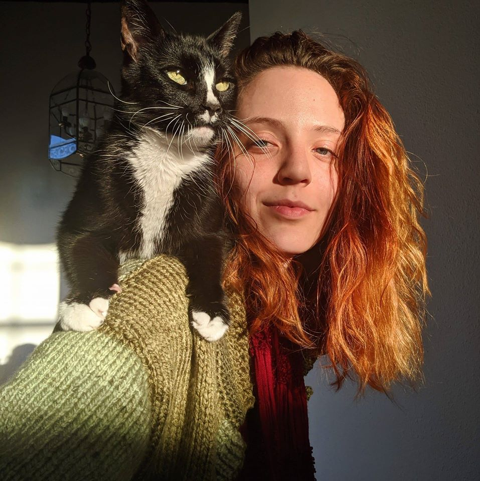
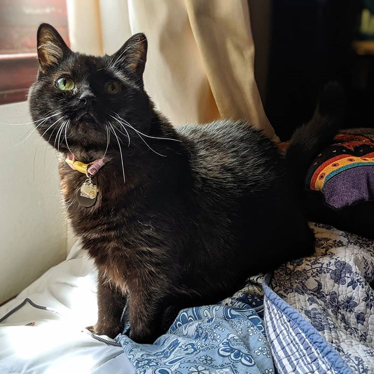
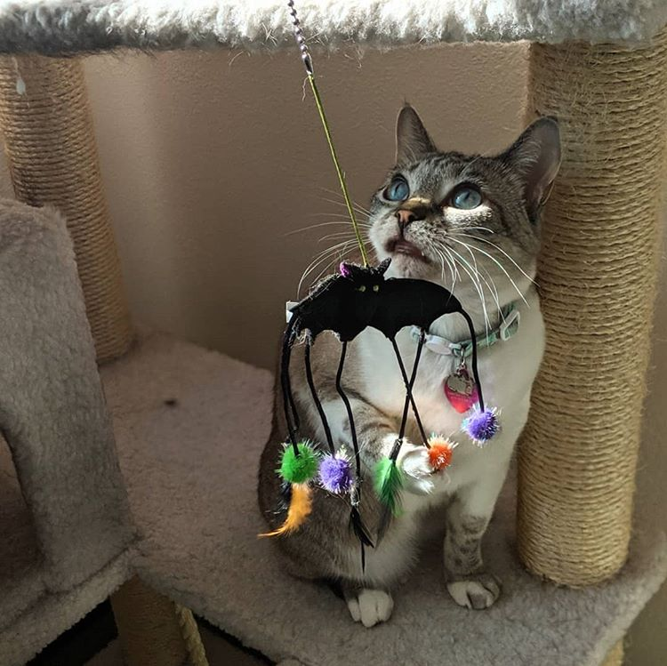
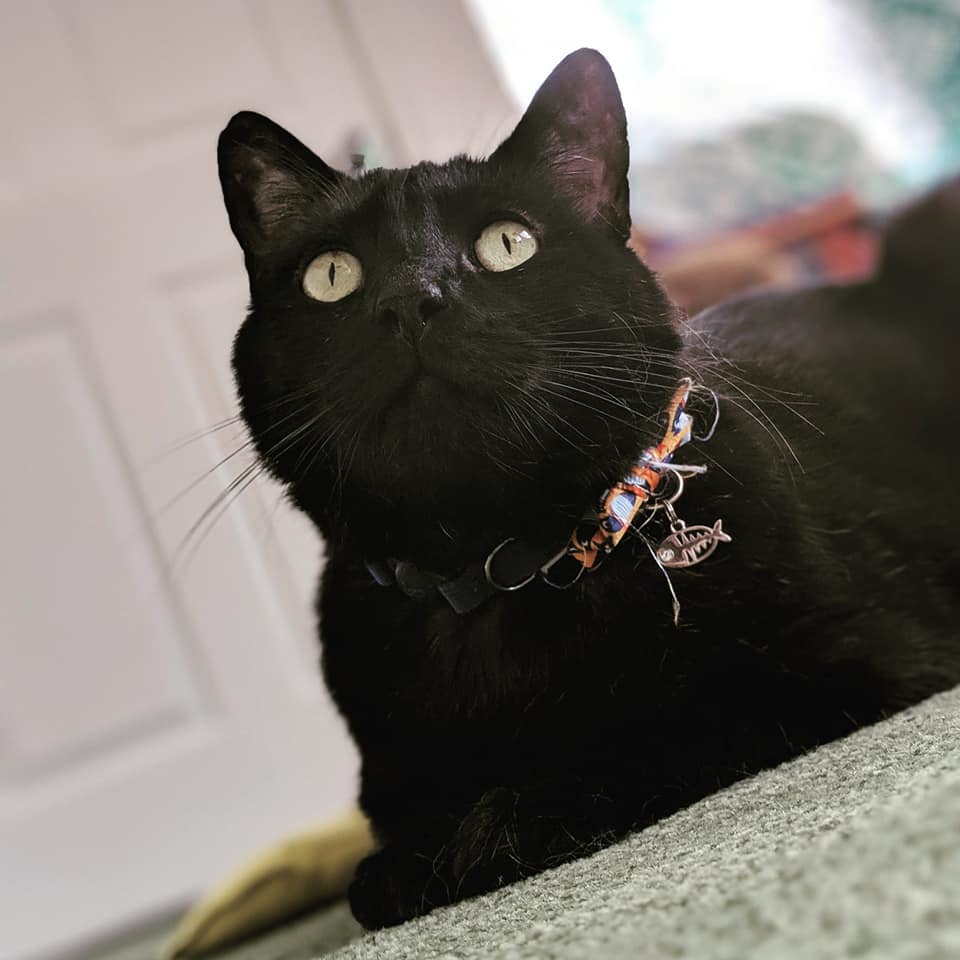
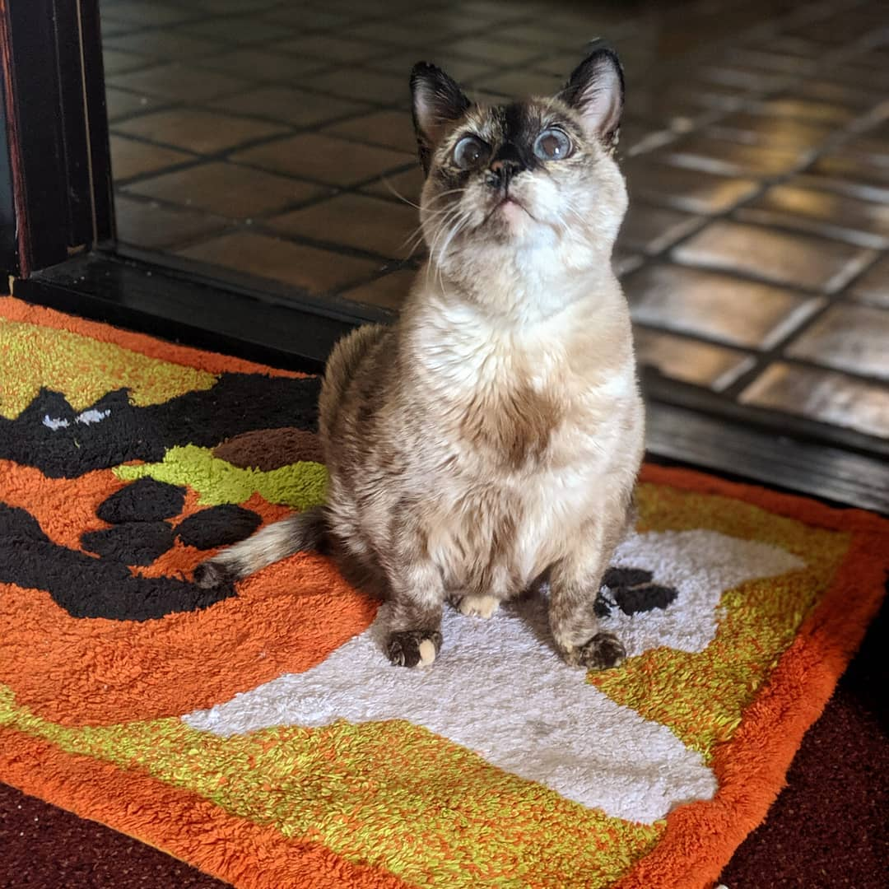

    
I’m Sarah - crafty, curious, creative, caring, and a little crazed. Nice to meet you! I live in the desert with my husband and four cats, and am additionally blessed to have a community of caring, unique, and wonderful friends behind me. I’m a software engineer, violinist/violist, wife, mother (to some pretty gorgeous cats), best friend, auntie, volunteer, hiker, and creator.
With Black Cat Apothekare, it is my dream and my intention to create an apothekare with love, sharing all I learn with others, and seeking to learn from others in the same way. All I do has come from a lifetime of learning different aspects of hedge-witchery, albeit a much shorter time learning about witchcraft in particular.
I plan to have an assortment of categories in the store, all oriented around providing witches (and muggles, too) options for everyday tasks, with sustainable and magickal intent. This will include - but will not be limited to - candles, botanical balms and oils, herbal steams, teas, cleaners, sprays, seeds, dried herbs, “unpaper” goods, body & bath, and more.
In a practical sense, this store is a manifestation of my desire to live in a renewable, sustainable, and magickal manner in every aspect of my life and aid others in doing the same. Created, and crafted, consciously. It’s certainly been, and will continue to be, quite the adventure - I can’t wait.